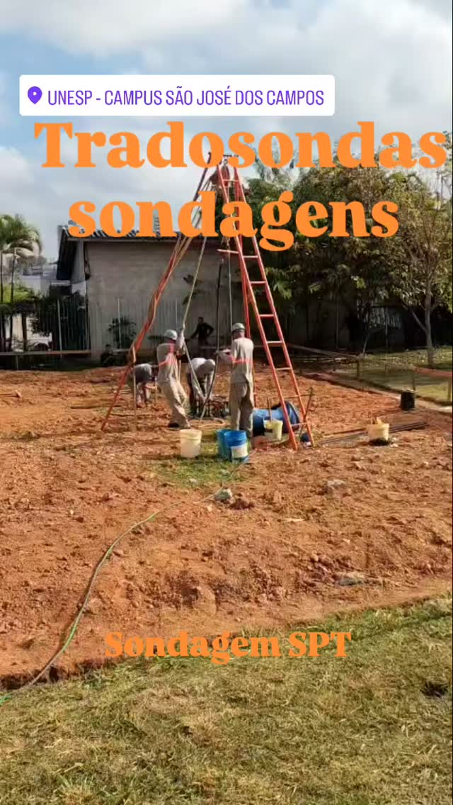
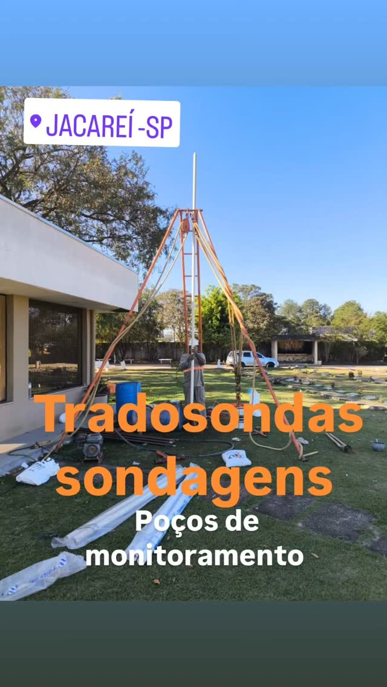
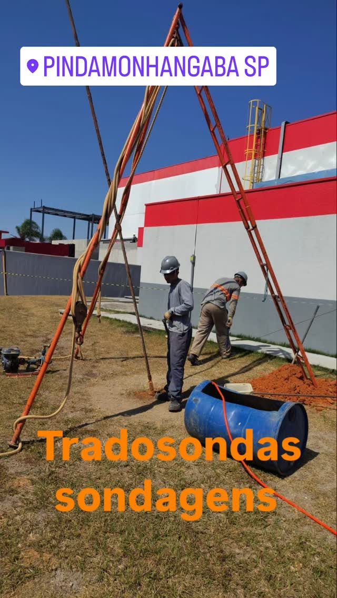
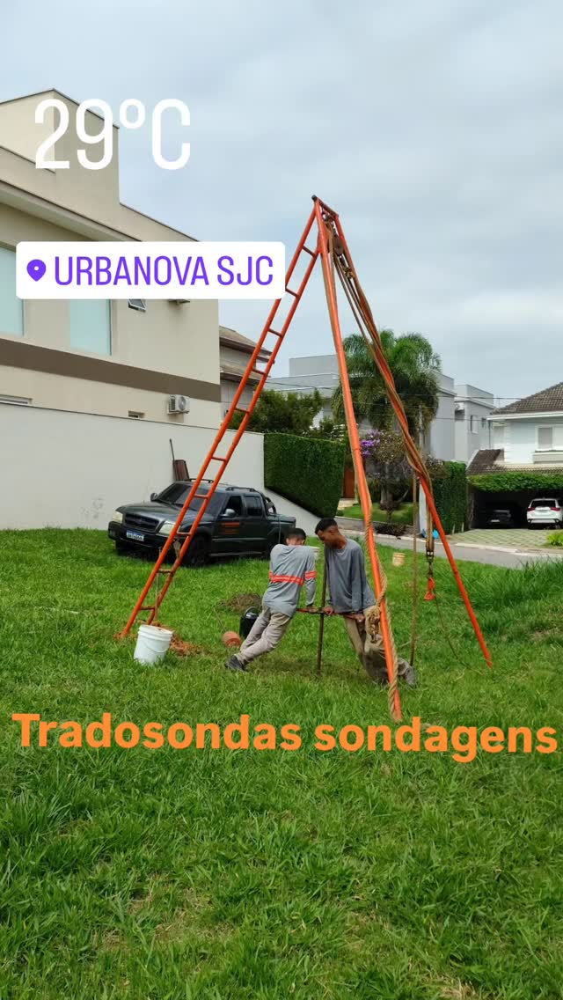
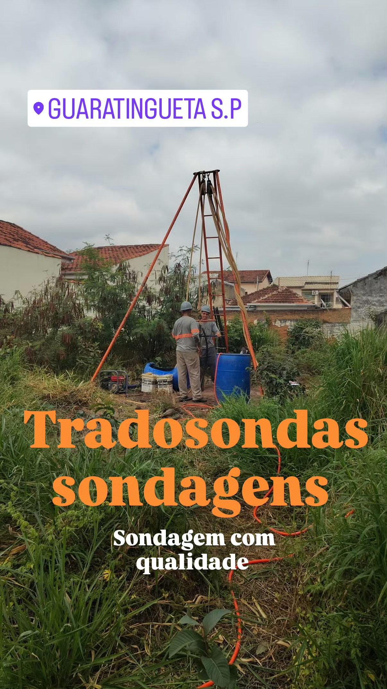
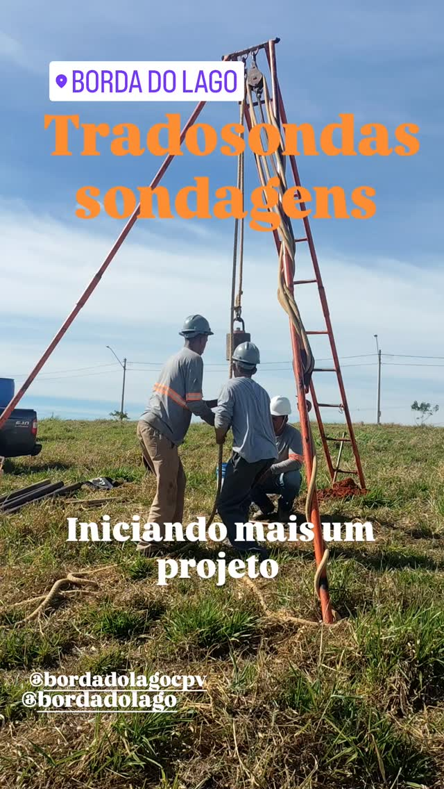
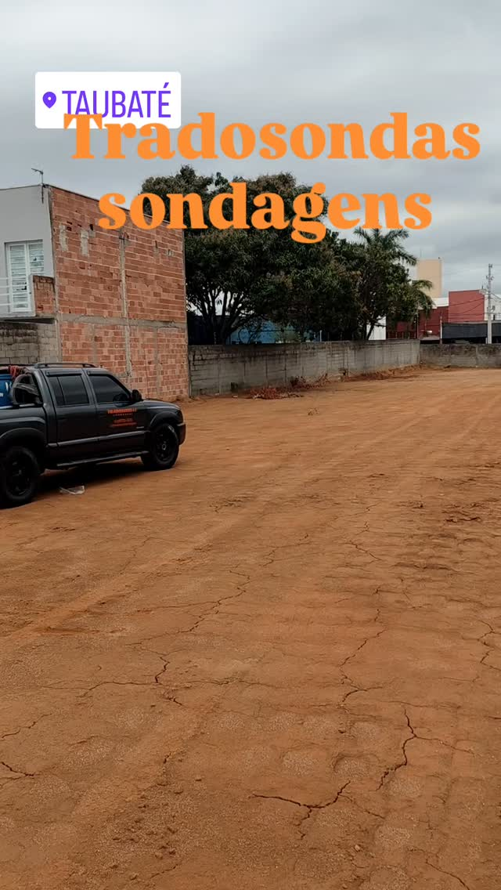
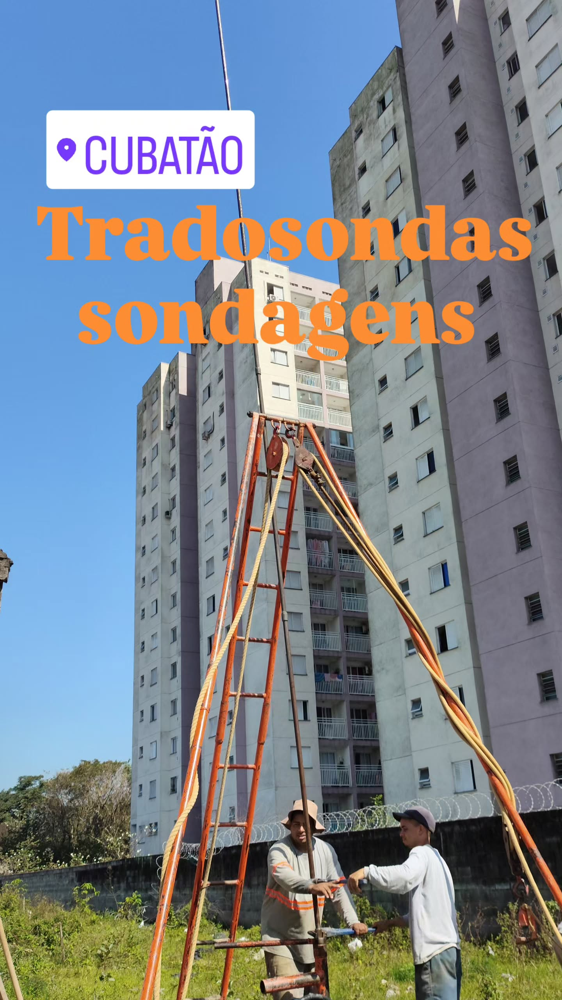

Portfólio de Sondagem no Vale do Paraíba e Litoral Norte
A Tradosondas é líder em serviços geotécnicos em São José dos Campos, Taubaté, Jacareí, Pindamonhangaba, Ubatuba e toda a região. Garantimos precisão e relatórios técnicos que seguem as normas ABNT, com destaque para a NBR 6484, essenciais para o solo local.
Solicitar OrçamentoProjetos Realizados no Vale e Litoral Norte
Nossa experiência abrange desde residências unifamiliares até grandes loteamentos, obras industriais e ambientais na região.

SPT - UNESP Campus São José dos Campos
Serviço de SPT para expansão da área universitária.

Sondagem SPT em Área Residencial - Jacareí, SP
Análise geotécnica para construção civil em bairro planejado.

Sondagem em Área Industrial - Pindamonhangaba, SP
Investigação SPT para projeto de fundação de galpão/expansão fabril.

SPT em Condomínio de Alto Padrão - Urbanova SJC
Serviço de precisão para residências de alto padrão com fundações complexas.

Sondagem SPT em Guaratinguetá, SP
Investigação para construção em áreas com variação de solo no Médio Vale.

Sondagem para Loteamento - Caçapava, SP
Serviço de múltiplos furos para grande área de condomínio horizontal.

Logística e SPT em Terreno Vazio - Taubaté, SP
Prontidão e agilidade na mobilização para grandes terrenos urbanos.

Sondagem em Área Urbana Densa - Cubatão, SP
Serviço de SPT em região com solo de argila mole, crucial para estabilidade de edifícios.
O Desafio Geotécnico em Destaque: As Argilas Moles do Vale do Paraíba
A construção civil nas cidades centrais do Vale do Paraíba, como São José dos Campos e Taubaté, enfrenta um inimigo invisível, mas poderoso: a argila mole. A Tradosondas, com sua experiência local, entende que ignorar este tipo de solo é o caminho mais rápido para problemas estruturais futuros, como recalques diferenciais e fissuras graves. Por isso, a correta interpretação da Sondagem SPT (Norma ABNT NBR 6484) na região é mais do que uma exigência legal; é uma garantia de segurança.
1. Por Que a Argila Mole é um Risco na Construção?
A argila mole é um material com alta compressibilidade e baixa capacidade de suporte. Em outras palavras, ela se deforma significativamente sob a carga de uma edificação. Esta deformação não é instantânea; ela ocorre lentamente ao longo do tempo, um processo conhecido como adensamento. Se a fundação for dimensionada para um solo firme e acabar apoiada em argila mole, o resultado é um assentamento desigual (recalque diferencial), que causa o temido "solo cedeu" e o surgimento de rachaduras.
Muitos terrenos aterrados em áreas de várzea ou próximas a rios no Vale do Paraíba escondem essas camadas problemáticas sob uma fina camada superficial de solo firme. Apenas a sondagem SPT, realizada metro a metro, é capaz de mapear essas transições de solo com precisão, revelando a profundidade exata da argila mole e do solo resistente (com índice N adequado).
2. A Importância do Índice NSPT em SJC e Taubaté
O Índice N SPT, que representa o número de golpes necessários para cravar o amostrador 30 cm no solo, é o dado mais vital para dimensionar a fundação. Em regiões de solo mole, o N pode ser extremamente baixo (N=0 a N=4). Isso indica que a fundação superficial (como sapatas) não é viável e exige a adoção de fundações profundas, como estacas ou tubulões.
Para projetos de grande porte, como edifícios ou galpões industriais, é comum que a sondagem precise atingir profundidades maiores que 15 metros para buscar o solo residual, o horizonte de solo firme que garantirá a estabilidade. A Tradosondas utiliza equipamentos calibrados e técnicas rigorosas para garantir que a leitura do NSPT seja fidedigna, um diferencial em áreas de alta incidência de solos problemáticos.
3. Soluções e Logística para Solos Moles (SPT e Piezômetros)
A expertise regional da Tradosondas não se limita a perfurar; ela engloba a logística e a solução técnica. Entregamos laudos que fornecem, além do perfil do solo e do índice N SPT, a posição exata do lençol freático, outro fator crítico na região.
Em áreas mais instáveis, como terrenos próximos a represas ou no Litoral Norte (Ubatuba, Caraguatatuba), onde o lençol freático é superficial, a instalação de piezômetros para monitoramento da pressão da água é um serviço complementar essencial que oferecemos. Ao escolher a Tradosondas, você não apenas cumpre a NBR 6484, mas também obtém um parceiro com profundo conhecimento das particularidades do solo do Vale do Paraíba, garantindo que seu projeto residencial, comercial ou industrial comece com a fundação mais segura e economicamente eficiente.
Garanta a segurança da sua obra.
Fale com um Especialista na Tradosondas